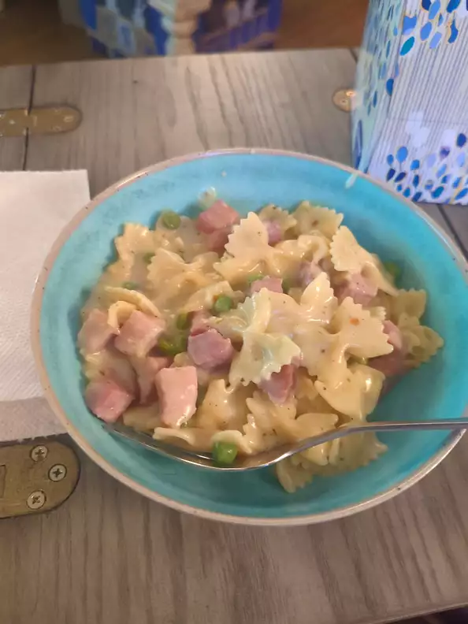

One-Pot Ham and Veggie Pasta

Description
Yummy Pasta
Ingredients
- 1 tablespoon olive oil
- 2 ½ cups cubed fully cooked ham
- ½ cup chopped onion
- 3 cloves garlic, minced
- 1 teaspoon Italian seasoning
- ¼ teaspoon red pepper flakes
- salt and pepper to taste
- 4 cups low-sodium chicken broth
- 1 ¼ cups fat free half-and-half
- ¼ cup all-purpose flour
- 1 (16 ounce) package farfalle (bow tie) pasta
- 2 cups frozen peas and carrots
- ½ cup grated Parmesan cheese
- chopped parsley for garnish
Steps
- Heat olive oil in a large pot over medium heat. Add ham and onion; saute for about 3 minutes. Add garlic and cook until fragrant, about 30 seconds. Stir in Italian seasoning, red pepper flakes, salt and pepper; cook for 2 minutes.
- Whisk together chicken broth, half-and-half, and flour in a bowl until smooth; pour into the pot. Stir in farfalle pasta, cover, and cook for 15 minutes.
- Add peas and carrots. Cook until pasta is cooked through, about 8 more minutes. Stir in Parmesan cheese and garnish with chopped parsley. Serve immediately.